Introduction
The trajectory followed by an object (say, a ball) thrown upward at an angle gives a curve known as a parabola. Trajectory of water jets in a fountain or of a bouncing ball results in a parabolic path. A parabola represents a Quadratic function.
A quadratic function has the form \(f(x) = ax^2 + bx + c\), where \(a,\ b,\ c\) are constants, and \(a \neq 0\).
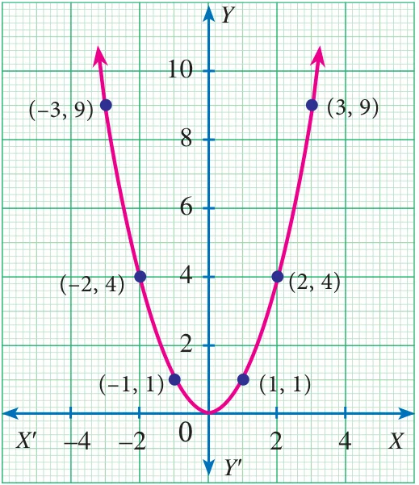
Many quadratic functions can be graphed easily by hand using the techniques of stretching/shrinking and shifting the parabola \(y = x^2\) (We can easily sketch the curve \(y = x^2\) by preparing a table of values and plotting the ordered pairs).
The “basic” parabola, \(y = x^2\), looks like this Fig.3.16.
The coefficient \(a\) in the general equation is responsible for parabolas to open upward or downward and vary in “width” (“wider” or “skinnier”), but they all have the same basic “\(\cup\)” shape.
The greater the quadratic coefficient of \(x^2\), the narrower is the parabola.
The lesser the quadratic coefficient of \(x^2\), the wider is the parabola.
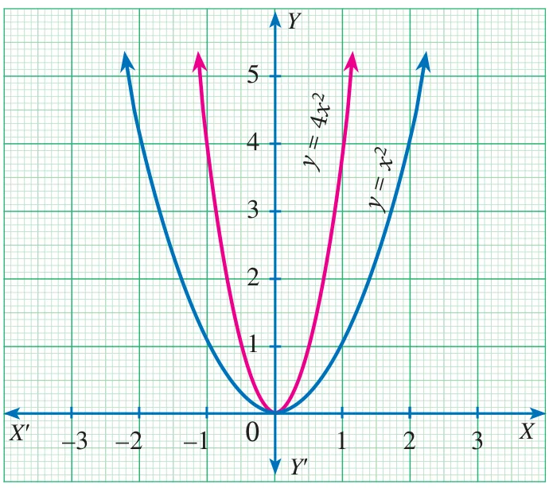
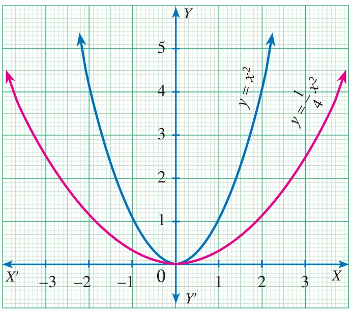
A parabola is symmetric with respect to a line called the axis of symmetry. The point of intersection of the parabola and the axis of symmetry is called the vertex of the parabola. The graph of any second degree polynomial gives a curve called “parabola”.
Hint
For a quadratic equation, the axis is given by \(x = \dfrac{-b}{2a}\) and the vertex is given by \(\left(\dfrac{-b}{2a}, \dfrac{-\Delta}{4a}\right)\) where \(\Delta = b^2 - 4ac\) is the discriminant of the quadratic equation \(ax^2 + bx + c = 0\). Where \(a \neq 0\).
We have already studied how to find the roots of any quadratic equation \(ax^2 + bx + c = 0\) where \(a, b, c \in \mathbb{R}\) and \(a \neq 0\) theoretically. In this section, we will learn how to solve a quadratic equation and obtain its roots graphically.
3.8.1 Finding the Nature of Solution of Quadratic Equations Graphically
To obtain the roots of the quadratic equation \(ax^2 + bx + c = 0\) graphically, we first draw the graph of \(y = ax^2 + bx + c\).
The solutions of the quadratic equation are the \(x\) coordinates of the points of intersection of the curve with \(X\) axis.
To determine the nature of solutions of a quadratic equation, we can use the following procedure.
- If the graph of the given quadratic equation intersect the \(X\) axis at two distinct points, then the given equation has two real and unequal roots.
- If the graph of the given quadratic equation touch the \(X\) axis at only one point, then the given equation has only one root which is same as saying two real and equal roots.
- If the graph of the given equation does not intersect the \(X\) axis at any point then the given equation has no real root.
Example 3.51
Discuss the nature of solutions of the following quadratic equations.
- \(x^2 + x - 12 = 0\)
- \(x^2 - 8x + 16 = 0\)
- \(x^2 + 2x + 5 = 0\)
Solution
(i) \(x^2 + x - 12 = 0\)
Step 1: Prepare the table of values for the equation \(y = x^2 + x - 12\).
| \(x\) | −5 | −4 | −3 | −2 | −1 | 0 | 1 | 2 | 3 | 4 |
|---|---|---|---|---|---|---|---|---|---|---|
| \(y\) | 8 | 0 | −6 | −10 | −12 | −12 | −10 | −6 | 0 | 8 |
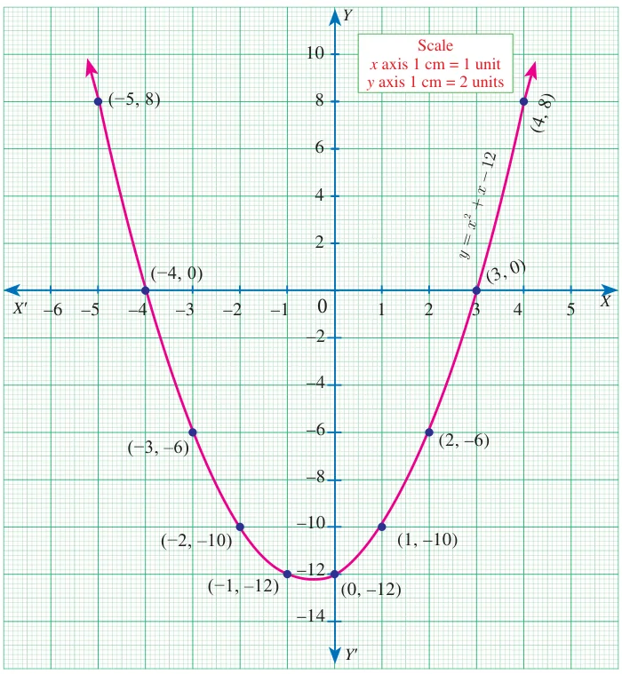
Step 2: Plot the points for the above ordered pairs \((x, y)\) on the graph using suitable scale.
Step 3: Draw the parabola and mark the co-ordinates of the parabola which intersect the X axis.
Step 4: The roots of the equation are the \(x\) coordinates of the intersecting points \((-4, 0)\) and \((3, 0)\) of the parabola with the X axis which are \(-4\) and 3 respectively.
Since there are two points of intersection with the X axis, the quadratic equation \(x^2 + x - 12 = 0\) has real and unequal roots.
(ii) \(x^2 - 8x + 16 = 0\)
Step 1: Prepare the table of values for the equation \(y = x^2 - 8x + 16\)
| \(x\) | −1 | 0 | 1 | 2 | 3 | 4 | 5 | 6 | 7 | 8 |
|---|---|---|---|---|---|---|---|---|---|---|
| \(y\) | 25 | 16 | 9 | 4 | 1 | 0 | 1 | 4 | 9 | 16 |
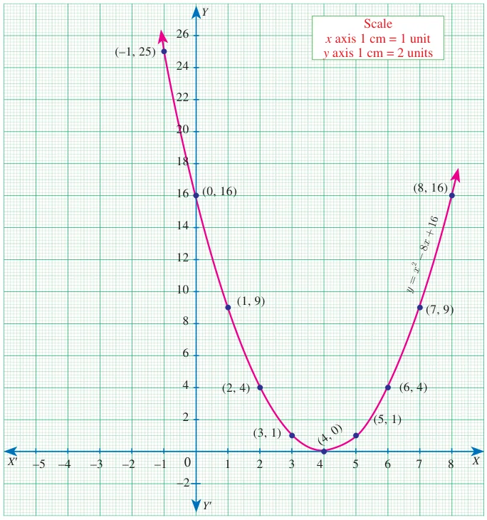
Step 2: Plot the points for the above ordered pairs \((x, y)\) on the graph using suitable scale.
Step 3: Draw the parabola and mark the coordinates of the parabola which intersect with the \(X\) axis.
Step 4: The roots of the equation are the \(x\) coordinates of the intersecting points of the parabola with the \(X\) axis (4,0) which is 4.
Since there is only one point of intersection with \(X\) axis, the quadratic equation \(x^2 - 8x + 16 = 0\) has real and equal roots.
(iii) \(x^2 + 2x + 5 = 0\)
Let \(y = x^2 + 2x + 5\)
Step 1: Prepare a table of values for the equation \(y = x^2 + 2x + 5\)
| \(x\) | −3 | −2 | −1 | 0 | 1 | 2 | 3 |
|---|---|---|---|---|---|---|---|
| \(y\) | 8 | 5 | 4 | 5 | 8 | 13 | 20 |
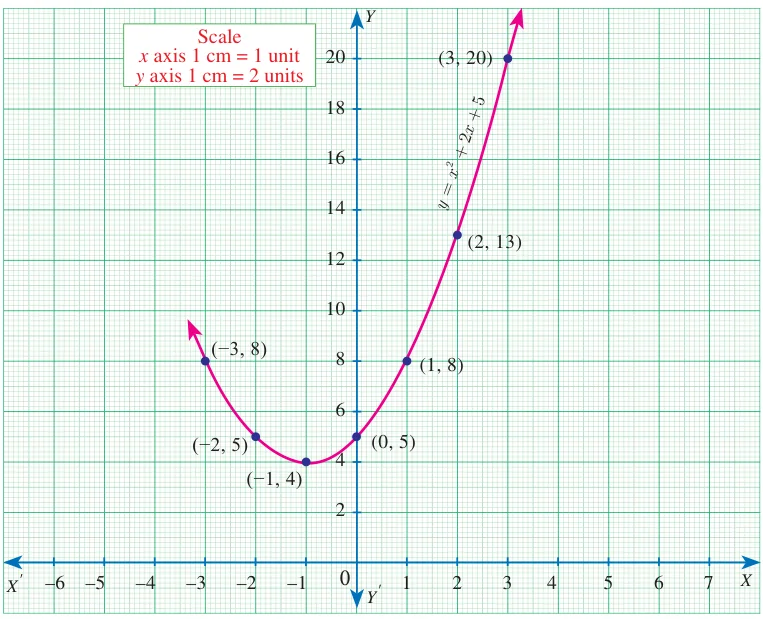
Step 2: Plot the above ordered pairs \((x, y)\) on the graph using suitable scale.
Step 3: Join the points by a free-hand smooth curve this smooth curve is the graph of \(y = x^2 + 2x + 5\)
Step 4: The solutions of the given quadratic equation are the \(x\) coordinates of the intersecting points of the parabola the \(X\) axis.
Here the parabola doesn’t intersect or touch the \(X\) axis.
So, we conclude that there is no real root for the given quadratic equation.
Progress Check
Connect the graphs to its respective number of points of intersection with \(X\) axis and to its corresponding nature of solutions which is given in the following table.
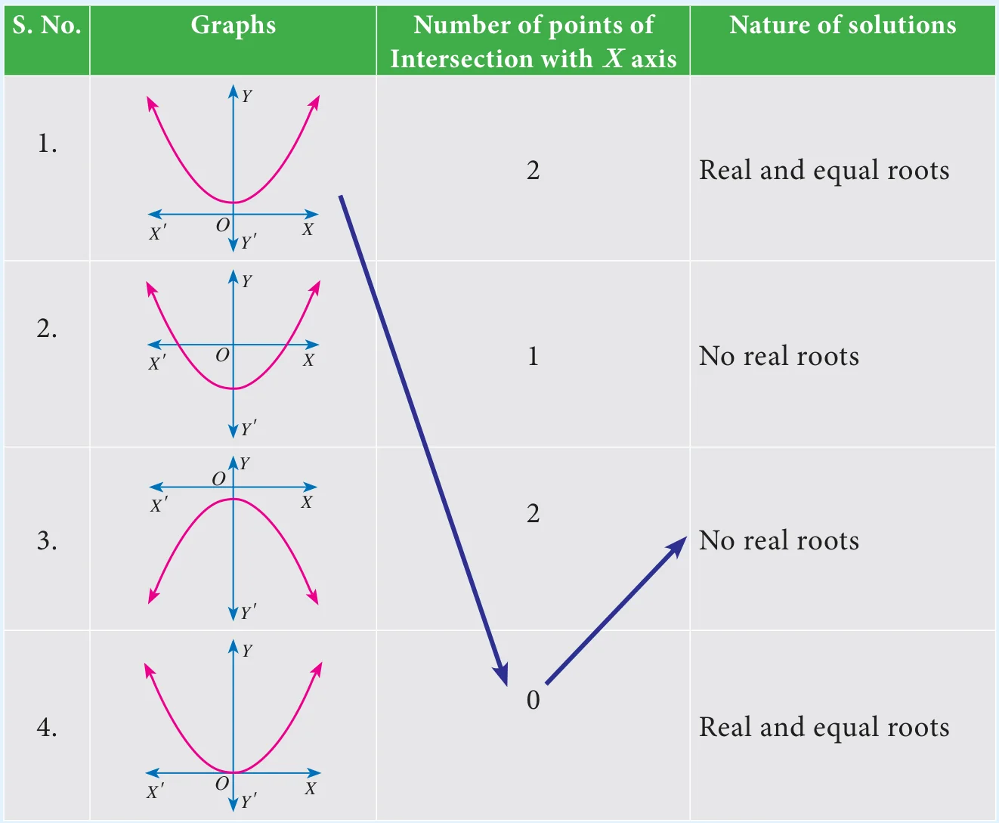
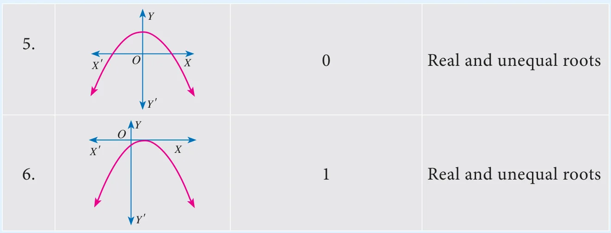
3.8.2 Solving quadratic equations through intersection of lines
We can determine roots of a quadratic equation graphically by choosing appropriate parabola and intersecting it with a desired straight line.
- If the straight line intersects the parabola at two distinct points, then the \(x\) coordinates of those points will be the roots of the given quadratic equation.
- If the straight line just touch the parabola at only one point, then the \(x\) coordinate of the common point will be the single root of the quadratic equation.
- If the straight line doesn’t intersect or touch the parabola then the quadratic equation will have no real roots.
Example 3.52
Draw the graph of \(y = 2x^2\) and hence solve \(2x^2 - x - 6 = 0\)
Solution
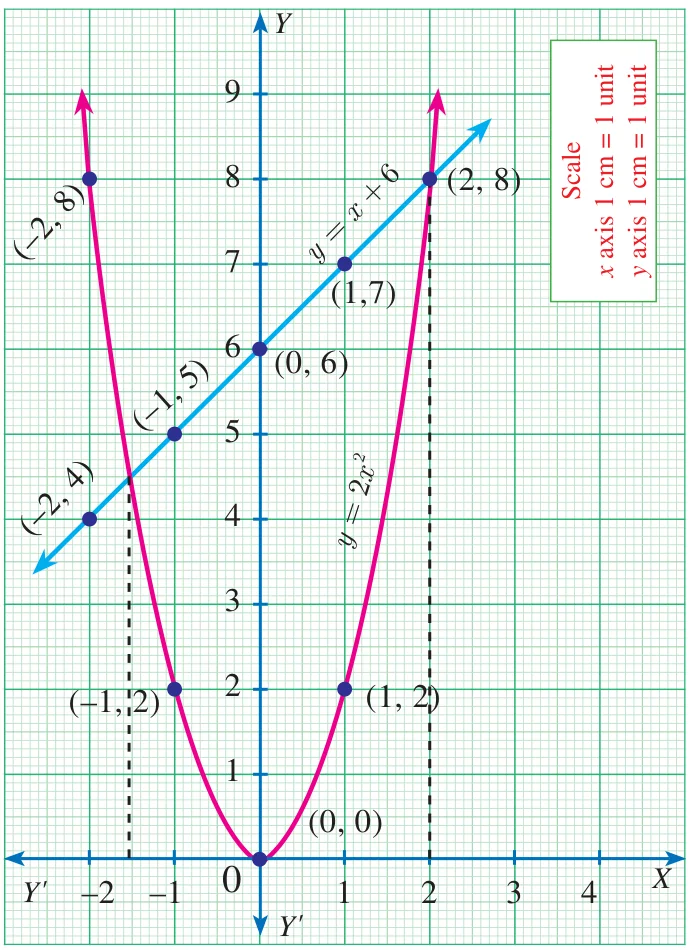
Step 1: Draw the graph of \(y = 2x^2\) by preparing the table of values as below
| \(x\) | −2 | −1 | 0 | 1 | 2 |
|---|---|---|---|---|---|
| \(y\) | 8 | 2 | 0 | 2 | 8 |
Step 2: To solve \(2x^2 - x - 6 = 0\), subtract \(2x^2 - x - 6 = 0\) from \(y = 2x^2\)
\(\begin{array}{rl} y &= 2x^2 \\ 0 &= 2x^2 - x - 6 \quad (-) \\ \hline y &= x + 6 \end{array}\)
The equation \(y = x + 6\) represents a straight line. Draw the graph of \(y = x + 6\) by forming table of values as below
| \(x\) | −2 | −1 | 0 | 1 | 2 |
|---|---|---|---|---|---|
| \(y\) | 4 | 5 | 6 | 7 | 8 |
Step 3: Mark the points of intersection of the curve \(y = 2x^2\) and the line \(y = x + 6\). That is, \((-1.5, 4.5)\) and \((2, 8)\)
Step 4: The \(x\) coordinates of the respective points forms the solution set \(\{-1.5, 2\}\) for \(2x^2 - x - 6 = 0\)
Example 3.53
Draw the graph of \(y = x^2 + 4x + 3\) and hence find the roots of \(x^2 + x + 1 = 0\)
Solution
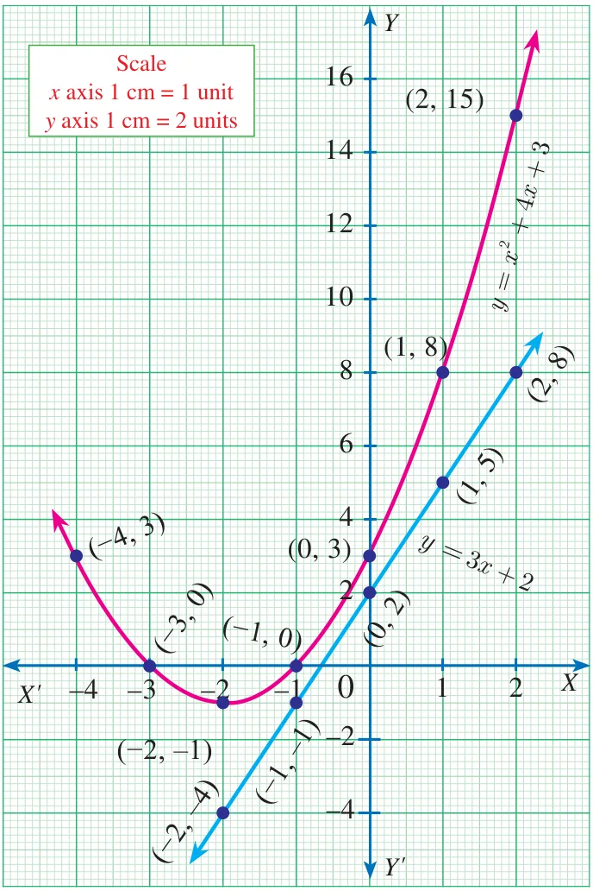
Step 1: Draw the graph of \(y = x^2 + 4x + 3\) by preparing the table of values as below
| \(x\) | −4 | −3 | −2 | −1 | 0 | 1 | 2 |
|---|---|---|---|---|---|---|---|
| \(y\) | 3 | 0 | −1 | 0 | 3 | 8 | 15 |
Step 2: To solve \(x^2 + x + 1 = 0\), subtract \(x^2 + x + 1 = 0\) from \(y = x^2 + 4x + 3\)
\(\begin{array}{rl} y &= x^2 + 4x + 3 \\ 0 &= x^2 + x + 1 \quad (-) \\ \hline y &= 3x + 2 \end{array}\)
The equation represent a straight line. Draw the graph of \(y = 3x + 2\) forming the table of values as below.
| \(x\) | −2 | −1 | 0 | 1 | 2 |
|---|---|---|---|---|---|
| \(y\) | −4 | −1 | 2 | 5 | 8 |
Step 3: Observe that the graph of \(y = 3x + 2\) does not intersect or touch the graph of the parabola \(y = x^2 + 4x + 3\).
Thus \(x^2 + x + 1 = 0\) has no real roots.
Example 3.54
Draw the graph of \(y = x^2 + x - 2\) and hence solve \(x^2 + x - 2 = 0\).
Solution
Step 1: Draw the graph of \(y = x^2 + x - 2\) by preparing the table of values as below
| \(x\) | −3 | −2 | −1 | 0 | 1 | 2 |
|---|---|---|---|---|---|---|
| \(y\) | 4 | 0 | −2 | −2 | 0 | 4 |
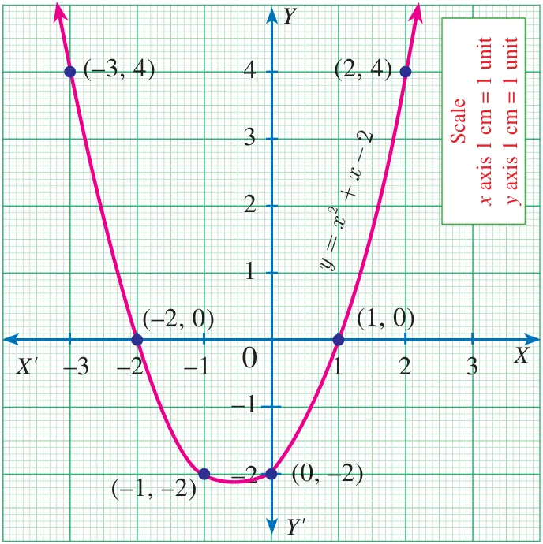
Step 2: To solve \(x^2 + x - 2 = 0\) subtract \(x^2 + x - 2 = 0\) from \(y = x^2 + x - 2\)
\(\text{that is}\quad \begin{array}{rl} y &= x^2 + x - 2 \\ 0 &= x^2 + x - 2 \quad (-) \\ \hline y &= 0 \end{array}\)
The equation \(y = 0\) represents the \(X\) axis.
Step 3: Mark the point of intersection of the curve \(y = x^2 + x - 2\) with the X axis. That is \((-2, 0)\) and \((1, 0)\)
Step 4: The \(x\) coordinates of the respective points form the solution set \(\{-2, 1\}\) for \(x^2 + x - 2 = 0\)
Example 3.55
Draw the graph of \(y = x^2 - 4x + 3\) and use it to solve \(x^2 - 6x + 9 = 0\)
Solution
Step 1: Draw the graph of \(y = x^2 - 4x + 3\) by preparing the table of values as below
| \(x\) | −2 | −1 | 0 | 1 | 2 | 3 | 4 |
|---|---|---|---|---|---|---|---|
| \(y\) | 15 | 8 | 3 | 0 | −1 | 0 | 3 |
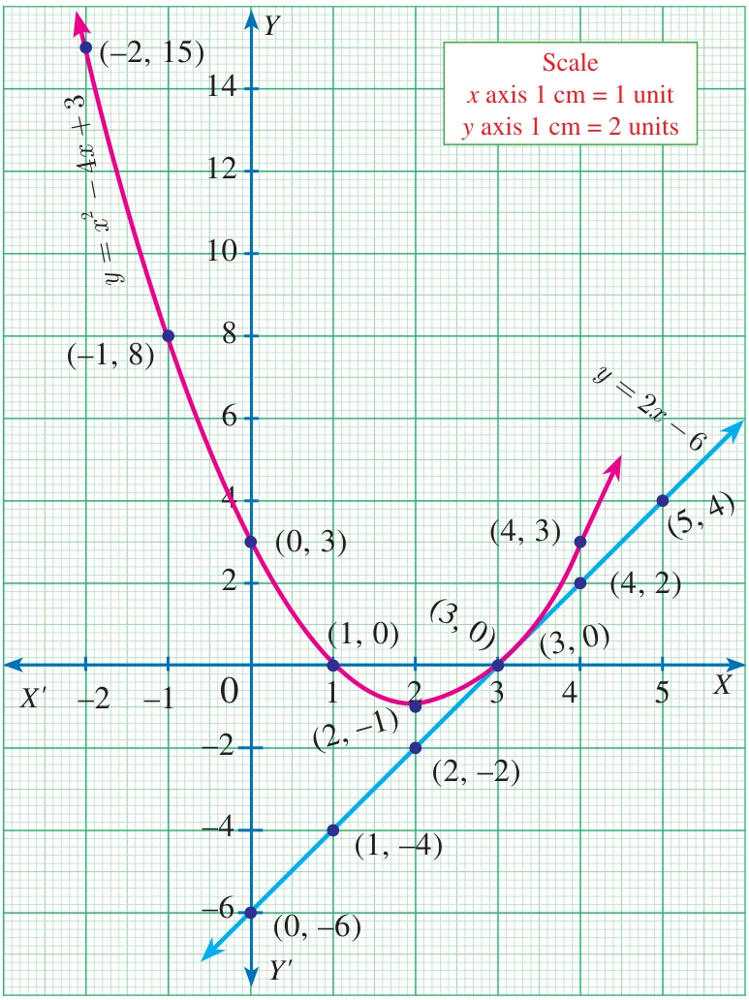
Step 2: To solve \(x^2 - 6x + 9 = 0\), subtract \(x^2 - 6x + 9 = 0\) from \(y = x^2 - 4x + 3\)
\(\text{that is}\quad \begin{array}{rl} y &= x^2 - 4x + 3 \\ 0 &= x^2 - 6x + 9 \quad (-) \\ \hline y &= 2x - 6 \end{array}\)
The equation \(y = 2x - 6\) represent a straight line. Draw the graph of \(y = 2x - 6\) forming the table of values as below.
| \(x\) | 0 | 1 | 2 | 3 | 4 | 5 |
|---|---|---|---|---|---|---|
| \(y\) | −6 | −4 | −2 | 0 | 2 | 4 |
The line \(y = 2x - 6\) intersect \(y = x^2 - 4x + 3\) only at one point.
Step 3: Mark the point of intersection of the curve \(y = x^2 - 4x + 3\) and \(y = 2x - 6\) that is \((3, 0)\).
Therefore, the \(x\) coordinate 3 is the only solution for the equation \(x^2 - 6x + 9 = 0\).